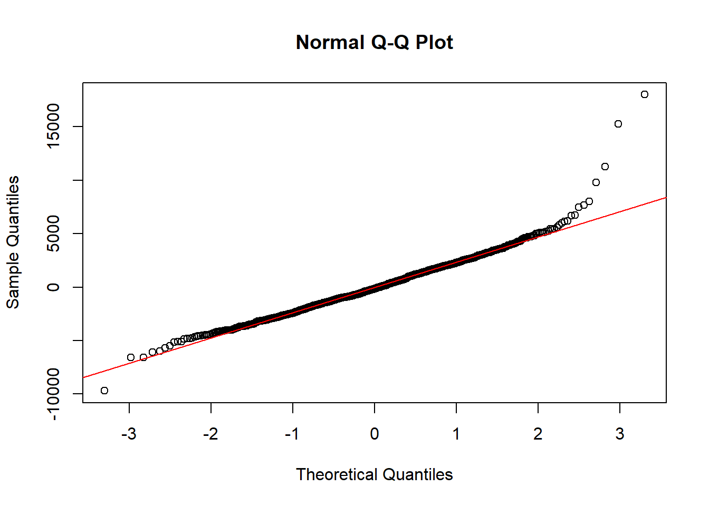
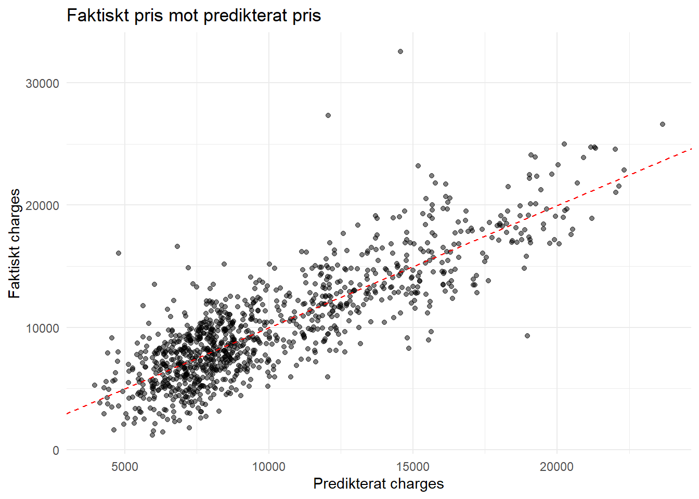

p_charges_hist
Syftet med analysen är att undersöka vilka variabler som verkar hänga ihop med försäkringskostnaderna mest.
Analysen baseras på ett dataset med information om individer, inklusive ålder, BMI, rökning och hälsotillstånd. Datan städades genom att hantera saknade värden och omkoda variabler till lämpliga datatyper. Nya variabler skapades, såsom åldersgrupper och ett riskmått baserat på flera faktorer. En beskrivande analys genomfördes med hjälp av statistiska sammanfattningar och visualiseringar för att identifiera mönster i datan. Slutligen användes en linjär regressionsmodell för att analysera vilka variabler som påverkar försäkringskostnader.
p_charges_hist
Histogrammet visar en högerskev fördelning där majoriteten av kostnaderna ligger mellan 5 000 och 15 000, medan ett fåtal observationer har mycket höga värden. Detta indikerar förekomst av outliers och att fördelningen inte är normal.
p_charges_vs_age
Det finns ett positivt samband mellan ålder och försäkringskostnader, där äldre individer tenderar att ha högre kostnader än yngre.
p_charges_bmi
Högre BMI uppvisar ett samband med högre kostnader, men sambandet är inte lika tydligt som för ålder och det finns stor spridning i datasetet.
smoker_charges_boxplot
Rökare har betydligt högre försäkringskostnader än icke-rökare. Skillnaden är stor både i median och spridning, vilket tyder på att rökning är en stark riskfaktor.
p_agegroup_charges_hist
Äldre åldersgrupper har generellt högre kostnader än yngre grupper, vilket stärker sambandet mellan ålder och försäkringskostnader.
mean_charges_region# A tibble: 4 × 2
region mean_charges
<fct> <dbl>
1 south 10329.
2 north 10211.
3 east 9882.
4 west 9878.mean_charges_sex# A tibble: 2 × 2
sex mean_charges
<fct> <dbl>
1 female 10150.
2 male 10030.Tabellerna visar mean charges per region och kön. Det finns inga tydliga skillnader i både regionerna och i kön. Detta kan indikera på att geografiskt region eller kön inte har en stor påverkan på försäkringkostnader.
p_prior_claims_charges
Antal tidigare claims tenderar att ha påverkan på charges.
p_charges_chronic
Kunder som har kronisk sjukdom har tydligt större försäkringskostnader än de utan.
Resultat tyder på att variabler som rökning, BMI, ålder samt tidigare claims och kronisk sjukdom är särskilt intressanta för vidare undersökning i regressionsanalysen, vilklet indikerar att hälsotillstånd och tidigare riskhistorik har centralt roll för försäkringskostnader.
model_comparison# A tibble: 3 × 4
model r_squared adjusted_r_squared residual_se
<chr> <dbl> <dbl> <dbl>
1 "Model 1: smoker + chronic_condition… 0.622 0.622 2825.
2 "Model 2: + prior_claims" 0.636 0.635 2774.
3 "Model 3: + age + bmi" 0.710 0.709 2478.Variabler som verkar ha tydligast samband med försäkringkostnader är framför allt rökning och kronisk sjukdom vilket tyder på att hälsorelaterade faktorer är de största drivkrafterna för försäkringkostnader. Tidigare claims har en tydlig påverkan på försäkringskostander. Dessutom har age och BMI en mindre men fortfarande tydlig påverkan. Samtliga variabler är statistiskt signifikanta vilket innebär att sambanden är tillförlitliga. Resultaten verkar rimliga då är rökning och kronisk sjukdom viktiga faktorer som är kopplade till hälsoproblem som ökar risk för hälsoproblem som kan sen leda till högre försäkringskostnader. Tidigare claims verkar också vara rimlig, eftersom historik används ofta som indikator på risk. Även andra faktorer såsom ålder och BMI verkar vara rimliga, då dessa faktorer påverkar hälsa, men inte lika starkt som rökning.
Modellen har flera begränsningar. Den inkluderar inte alla faktorer som påverkar försäkringskostnader, exempelvis livsstil eller kost. Vidare antar modellen linjära samband mellan variablerna och kostnaderna, vilket kan vara en förenkling av verkligheten. Residualanalysen visar också att modellen har svårare att exakt förutsäga höga kostnader, vilket tyder på att viss variation inte fångas. Slutligen visar modellen samband men kan inte fastställa orsakssamband.
qqnorm(resid(model_3))
qqline(resid(model_3), col = "red")
act_vs_pred
Slutligen faktorer som verkar ha tydligast samband med försäkringskostnader är rökning och kronisk sjukdom vilket betyder att hälsorelaterade faktorer verkar ha tydligast samband. Andra tydliga men inte lika tydliga som rökning och kronisk sjukdom är tidigare claims, samt ålder och BMI. Modellen förklarar ungefär 71% av variationen i kostnader vilket innebär att de viktigaste kostnader fångas. Spridningen i residualerna visar att modellen är inte perfekt, speciellt vid högre kostnader.
Modellen fångar inte alla faktorer som påverkar försäkringskostnader. Exempelvis saknas mer detaljerade livsstilsfaktorer eller kost. Vidare visar residualanalysen att modellen har svårare att förutsäga höga kostnader, vilket tyder på att extrema värden inte förklaras fullt ut. Modellen antar också linjära samband, vilket kan vara en förenkling av verkligheten.
act_res_diff charges fitted_value residual
1 6439.10 7360.222 -921.1218
2 8274.06 8632.622 -358.5618
3 5190.99 6414.847 -1223.8571
4 6534.40 8184.294 -1649.8940
5 8026.39 6417.855 1608.5354
6 8770.46 8356.256 414.2044
7 6926.29 7666.389 -740.0993
8 14105.25 12110.023 1995.2271
9 11702.80 15581.936 -3879.1362
10 6429.21 5157.368 1271.8421En av de möjliga förbättringarna är att inkludera fler faktorer som hade ökat modellens komplexitet, men det hade inte bidragit till någon speciell förbättring i förklaringsgraden. Att inkludera fler variabler kan också göra det svårare att tolka modellen och vi riskerar överanpassning. Den andra möjliga förbättringen är att undersöka interaktioner mellan variablerna. En annan förbättring till analysen är att skapa mer avancerade variabler eller kategoriseringar. Dessutom en större mängd data skulle kunna ge mer tillförlitliga resultat.
Vad tycker du att du gjorde bra i uppgiften?
Det jag tyckte att jag gjorde bra i uppgiften är att jag undersökte vilka faktorer som kan ha stor påverkan på försäkringskostnader och sedan fokuserat på dem i nästa steg.
Vad var svårast?
Det jag tyckte att var svårast var att välja mina visualiseringar och att dikutera och motivera mina val på ett tolkningsbar sätt.
Vilket betyg tycker du att din inlämning motsvarar, G eller VG?
Jag tycker att inlämningen motsvarar VG.
Motivera kort genom att hänvisa till vilka krav i uppgiften du tycker att du uppfyllt.
Analysen uppfyller kraven i uppgiften genom att datasetet har undersökts, städats och förberetts på ett strukturerat sätt. En beskrivande analys har genomförts med relevanta visualiseringar och tabeller som visar hur försäkringskostnader är fördelade och hur de skiljer sig mellan olika grupper. Vidare har minst en regressionsmodell byggts där relevanta prediktorer valts och motiverats utifrån den beskrivande analysen. Resultaten har tolkats och kopplats till verkliga samband, och modellens förklaringsgrad samt signifikans har diskuterats. Utöver detta har två modellvarianter jämförts och motiverats, där den slutliga modellen valts utifrån tolkbarhet och förklaringsförmåga. Analysen innehåller även en diskussion kring modellens begränsningar samt möjliga förbättringar, vilket visar på ett kritiskt och självständigt resonemang